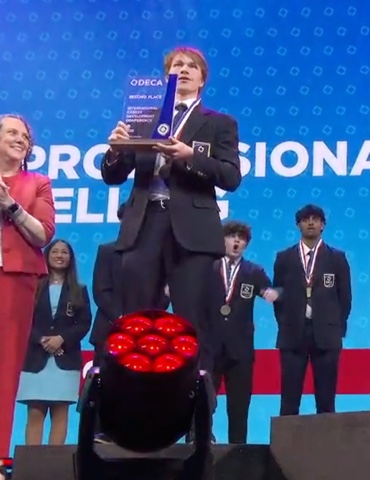

B-01
Lumen
What I built
Lumen is a service helping nonprofits learn how to properly use AI. The specific application transforms what you want into a good prompt. A good prompt gives context, clarity, a role for the AI, and more context (yes, lots of context).
The hard part
The hardest part was making a product good enough to be pitched: technically viable in market, but also clean enough to look marketable. A delicate balance.
What I learned
A good story is the most effective way to both tease out truth and have someone believe in your idea.
Results
Against the best sellers in the world, I didn't qualify to even get a test medal (the test is basically a list of buzzwords), but I did get second overall. I got 5th at state and placed 3 spots higher when the competition became international.

- Project
- Lumen Prompt Optimizer
- Role
- Creator
- Years
- 2026
- Status
- v1 live